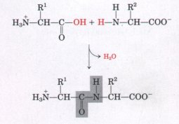
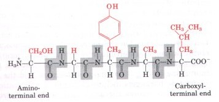
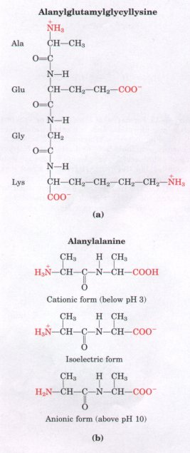
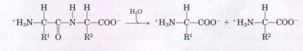
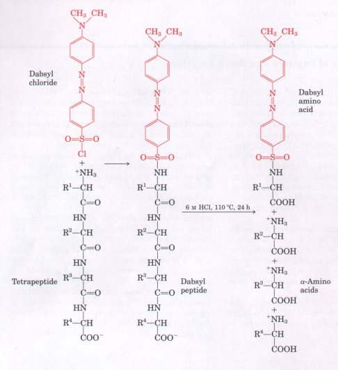
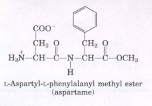
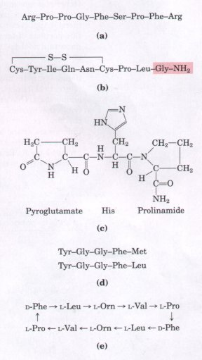
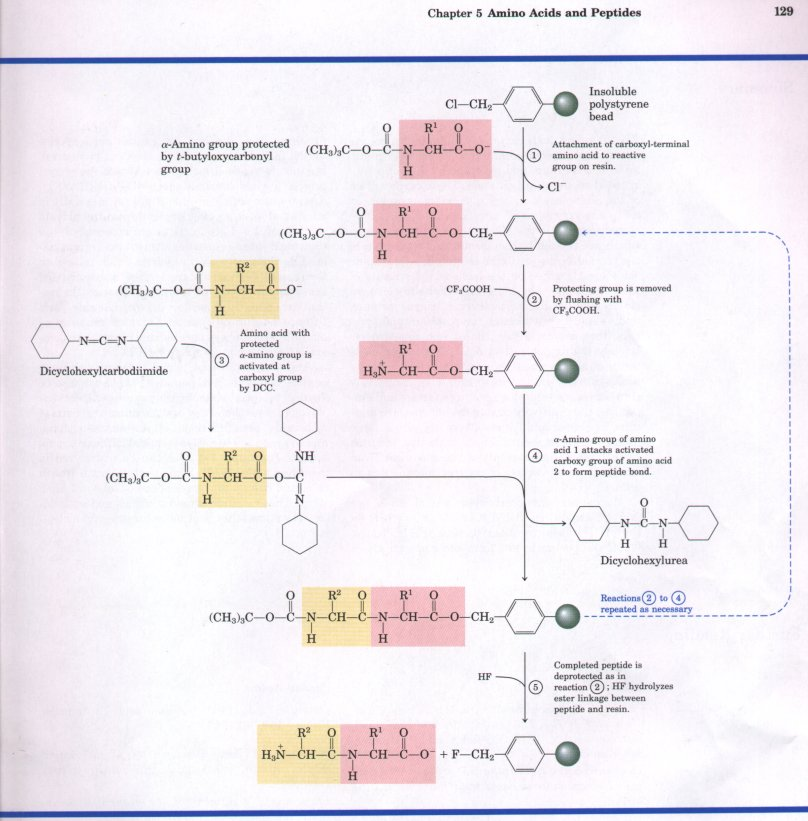

We now turn to polymers of amino acids, the peptides. Biologically occurring peptides range in size from small molecules containing only two or three amino acids to macromolecules containing thousands of amino acids. The focus here is on the structure and chemical properties of the smaller peptides, providing a prelude to the discussion of the large peptides called proteins in the next two chapters.
| Two amino acid molecules can be covalently joined through a substituted amide linkage, termed a peptide bond, to yield a dipeptide. Such a linkage is formed by removal of the elements of water from the α-carboxyl group of one amino acid and the α-amino group of another (Fig. 5-15). Peptide-bond formation is an example of a condensation reaction, a common class of reaction in living cells. Note that as shown in Figure 5-15, this reaction has an equilibrium that favors reactants rather than products. To make the reaction thermodynamically more favorable, the carboxyl group must be chemically modified or activated so that the hydroxyl group can be more readily eliminated. A chemical approach to this problem is outlined at the end of this chapter (see Box 5-2). The biological approach to peptide bond formation is a major topic of Chapter 26. |  Figure 5-15 Formation of a peptide bond (shaded in gray) in a dipeptide. This is a condensation reaction. The α-amino group of amino acid 2 acts as a nucleophile (see Table 3-6) to displace the hydroxyl group of amino acid 1 (red). Amino groups are good nucleophiles, but the hydroxyl group is a poor leaving group and is not readily displaced. At physiological pH the reaction as shown does not occur to any appreciable extent. Peptide bond formation is endergonic, with a free-energy change of about+21 kJ/mol. |
Three amino acids can be joined by two peptide bonds to form a tripeptide; similarly, amino acids can be linked to form tetrapeptides and pentapeptides. When a few amino acids are joined in this fashion, the structure is called an oligopeptide. When many amino acids are joined, the product is called a polypeptide. Proteins may have thousands of amino acid units. Although the terms "protein" and "polypeptide" are sometimes used interchangeably, molecules referred to as polypeptides generally have molecular weights below 10,000.
Figure 5-16 shows the structure of a pentapeptide. The amino acid units in a peptide are often called residues (each has lost a hydrogen atom from its amino group and a hydroxyl moiety from its carboxyl group). The amino acid residue at that end of a peptide having a free a-amino group is the amino-terminal (or N-terminal) residue; the residue at the other end, which has a free carboxyl group, is the carboxyl-terminal (C-terminal) residue. By convention, short peptides are named from the sequence of their constituent amino acids, beginning at the left with the amino-terminal residue and proceeding toward the carboxyl terminus at the right (Fig. 5-16). |
 Figure 5-16 Structure of the pentapeptide serylglycyltyrosinylalanylleucine, or Ser-Gly-Tyr-Ala-Leu. Peptides are named beginning with the amino-terminal residue, which by convention is placed at the left. The peptide bonds are shown shaded in gray, the R groups in red. |
Although hydrolysis of peptide bonds is an exergonic reaction, it occurs slowly because of its high activation energy. As a result, the peptide bonds in proteins are quite stable under most intracellular conditions.
The peptide bond is the single most important covalent bond linking amino acids in peptides and proteins. The only other type of covalent bond that occurs frequently enough to deserve special mention here is the disulfide bond sometimes formed between two cysteine residues. Disulfide bonds play a special role in the structure of many proteins, particularly those that function extracellularly, such as the hormone insulin and the immunoglobulins or antibodies.
| Peptides contain only one free a-amino group and one free α-carboxyl group (Fig. 5-17). These groups ionize as they do in simple amino acids, although the ionization constants are different because the oppositely charged group is absent from the α carbon. The α-amino and α-carboxyl groups of all other constituent amino acids are covalently joined in the form of peptide bonds, which do not ionize and thus do not contribute to the total acid-base behavior of peptides. However, the R groups of some amino acids can ionize (Table 5-1), and in a peptide these contribute to the overall acid-base properties (Fig. 5-17). Thus the acid-base behavior of a peptide can be predicted from its single free α-amino and α-carboxyl groups and the nature and number of its ionizable R groups. Like free amino acids, peptides have characteristic titration curves and a characteristic isoelectric pH at which they do not move in an electric field. These properties are exploited in some of the techniques used to separate peptides and proteins (Chapter 6). |  Figure 5-17 Ionization and electric charge of peptides. The groups ionized at pH 7.0 are in red.(a) A tetrapeptide with two ionizable R groups. (b) The cationic, isoelectric, and anionic forms of a dipeptide lacking ionizable R groups |
Like other organic molecules, peptides undergo chemical reactions that are characteristic of their functional groups: the free amino and carboxyl groups and the R groups.
Peptide bonds can be hydrolyzed by boiling with either strong acid (typically 6 M HCl) or base to yield the constituent amino acids.

| Hydrolysis of peptide bonds in this
manner is a necessary step in determining the amino acid
composition of proteins. The reagents shown in Figure
5-14 label only free amino groups: those of the
amino-terminal residue and the R groups of any lysines
present. If dabsyl chloride, dansyl chloride, or
1-fluoro-2,4-dinitrobenzene is used before acid
hydrolysis of the peptide, the amino-terminal residue can
be separated and identified (Fig. 5-18). Peptide bonds can also be hydrolyzed by certain enzymes called proteases. Proteolytic (protein-cleaving) enzymes are found in all cells and tissues, where they degrade unneeded or damaged proteins or aid in the digestion of food. |
 Figure 5-18 The amino-terminal residue of a tetrapeptide can be identified by labeling it with dabsyl chloride, then hydrolyzing the peptide bonds in strong acid. The result is a mixture of amino acids of which only the amino-terminal amino acid (and lysine) is labeled. |
Much of the material in the chapters to follow will revolve around the activities of proteins with molecular weights measured in the tens and even hundreds of thousands. Not all polypeptides are so large, however. There are many naturally occurring small polypeptides and oligopeptides, some of which have important biological activities and exert their effects at very low concentrations. For example, a number of vertebrate hormones (intercellular chemical messengers) (Chapter 22) are small polypeptides. The hormone insulin contains two polypeptide chains, one having 30 amino acid residues and the other 21. Other polypeptide hormones include glucagon, a pancreatic hormone of 29 residues that opposes the action of insulin, and corticotropin, a 39residue hormone of the anterior pituitary gland that stimulates the adrenal cortex.
Some biologically important peptides have only a few amino acid residues. That small peptides can have large biological effects is readily illustrated by the activity of the commercially synthesized dipeptide, L-aspartylphenylalanyl methyl ester. This compound is an artificial sweetener better known as aspartame or NutraSweet(R):
 Among naturally occurring small peptides are hormones such as oxytocin (nine amino acid residues), which is secreted by the posterior pituitary and stimulates uterine contractions; bradykinin (nine residues), which inhibits inflammation of tissues; and thyrotropin-releasing factor (three residues), which is formed in the hypothalamus and stimulates the release of another hormone, thyrotropin, from the anterior pituitary gland (Fig. 5-19). Also noteworthy among short peptides are the enkephalins, compounds formed in the central nervous system that bind to receptors in certain cells of the brain and induce analgesia (deadening of pain sensations). Enkephalins represent one of the body's own mechanisms for control of pain. The enkephalin receptors also bind morphine, heroin, and other addicting opiate drugs (although these are not peptides). Some extremely toxic mushroom poisons, such as amanitin, are also peptides, as are many antibiotics. A growing number of small peptides are proving to be important commercially as pharmaceutical reagents. Unfortunately, they are often present in exceedingly small amounts and hence are hard to purify. For these and other reasons, the chemical synthesis of peptides has become one of the major technologies associated with biochemistry (Box 5-2). |
 Figure 5-19 Some naturally occurring peptides with intense biological activity. The amino-terminal residues are at the left end. (a) Bradykinin, a hormonelike peptide that inhibits inflammatory reactions. (b) Oxytocin, formed by the posterior pituitary gland. The shaded portion is a residue of glycinamide (H2N-CH2-CONH2). (c) Thyrotropinreleasing factor, formed by the hypothalamus.(d) 1wo enkephalins, brain peptides that affect the perception of pain. (e) Gramicidin S, an antibiotic produced by the bacterium Bacillus breuis. The arrows indicate the direction from the amino toward the carboxyl end of each residue. The peptide has no termini because it is circular. Orn is the symbol for ornithine, an amino acid that generally does not occur in proteins. Note that gramicidin S contains two residues of a D-amino acid (D-phenylalanine). |
BOX 5-2Chemical Synthesis of Peptides and Small ProteinsMany peptides are potentially useful as pharmacological reagents, and their synthesis is of considerable commercial importance. There are three ways to obtain a peptide: (1) purification from tissue, a task often made difficult by the vanishingly low concentrations of some peptides; (2) genetic engineering; or (3) direct chemical synthesis. Powerful techniques now make direct chemical synthesis an attractive option in many cases. In addition to commercial applications, the synthesis of specific peptide portions of larger proteins is an increasingly important tool for the study of protein structure and function. The complexity of proteins makes the traditional synthetic approaches of organic chemistry impractical for peptides with more than four or five amino acids. One problem is the difficulty of purifying the product after each step, because the chemical properties of the peptide change each time a new amino acid is added.
The technology for chemical peptide synthesis has been automated, and several commercial instruments are now available. The most important limitation of the process involves the efficiency of each amino acid addition, as can be seen by calculating the overall yields of peptides of various lengths when the yield for addition of each new amino acid is 96.0 versus 99.8% (Table 1). The chemistry has been optimized to permit the synthesis of proteins 100 amino acids long in about 4 days in reasonable yield. A very similar approach is used to synthesize nucleic acids (Fig. 12-38). It is worth noting that this technology, impressive as it is, still pales when compared with biological processes. The same 100 amino-acid protein would be synthesized with exquisite fidelity in about 5 seconds in a bacterial cell.  |